2019年寒假微留学
行程概述：
2019年寒假 1月18日出发，9天【奥克兰微留学+南北岛纵深游】一程双线温暖避冬之旅。
行程亮点：
★最佳环境 - 新西兰美号“上帝的后花园”；“人类最后一片净土”，洗肺之旅绝不虚言。
★优质教学 - 新西兰具备全球最优质的教育体系，为期一周的体验留学定会让孩子视野大开，受益良多。
★温馨住宿 - 校方指定洋人寄宿家庭、课余仍可学习英语，收获异国友谊。家长行程：星级酒店搭配独立别墅，社交+私密，多重体验。
★一程双线 - 我社提供学生和家长同程双线的特色体验，详见【行程安排】或直询客服。
★亲近自然 - 萌萌的动物是新西兰一大特色，独有的几维鸟，憨态可掬的蓝企鹅，第一神兽羊驼、海豹、牛羊、海鸥、海豚等多种动物；
★壮丽山河 - 巍峨的雪山、环绕的大海、媲美美国黄石公园的地质奇观，冰川，峡湾，沙漠与独具特色的毛利文化。
★全新体验 - 专车专导，绝无拼团或购物，私家出游，行程灵活。贴心、省心、舒心—全程向传统跟团游的各种不适与尴尬宣战！
★高性价比 - 真实体会订制游的行程——享受普通跟团游的价格！
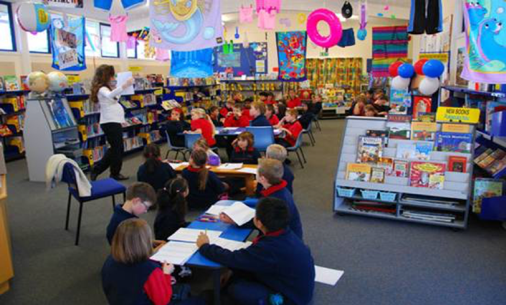
适合人群：
年龄范围：学生8-16岁，家长70岁以下。
团体形式：适合家庭出游、学校组织、教育培训机构组织，各种形式冬夏令营。
成团条件：10人即可成团。
##行程概览：
线路
学生线路
| Day 1 | Day 2 | Day 3 | Day 4 | Day 5 | Day 6 | Day 7 | Day 8 | Day 9 | Day 10 |
|---|---|---|---|---|---|---|---|---|---|
| 中国出发 | 抵达新西兰，游览伊甸山 | 入学 8：30-3：00 与寄宿家庭休闲 | 入学 8：30-3：00 与寄宿家庭休闲 | 入学 8：30-3：00 与寄宿家庭休闲 | 入学 8：30-3：00 与寄宿家庭休闲 | 入学 8：30-3：00 与寄宿家庭休闲 | 汉密尔顿花园/ 霍比特人村 | 爱歌顿牧场/萤火虫洞 | 返回国内 |
家长线路
| Day 1 | Day 2 | Day 3 | Day 4 | Day 5 | Day 6 | Day 7 | Day 8 | Day 9 | Day 10 |
|---|---|---|---|---|---|---|---|---|---|
| 中国出发 | 抵达新西兰，游览伊甸山 | 奥克兰-派西亚 | 九十里海滩 | 新西兰岛屿湾石中洞+观海豚半日游 | 汉密尔顿花园/ 霍比特人村 | 爱歌顿牧场/萤火虫洞 | 返回国内 |
详情
★第一天 -中国✈奥克兰
乘机前往全球宜居城市榜排名前十，有着千帆之都美誉的奥克兰。
★第二天 - 抵达奥克兰
沿途游览奥克兰与众不同的城市风格，一览千帆之都的秀丽风光，入住酒店。
晚餐：当地特色自助餐开启令人期待的新西兰游学之旅。
住宿：4星级酒店或温馨度假别墅
★第三-七天 - 奥克兰当地知名小学一周微留学（孩子活动安排）
家长陪同孩子一同进入位于奥克兰东区Howick优质校区的知名小学，开启为期一周的留学体验之旅。
该小学在新西兰教育部评级体系ERO评级中获得了最佳表现学校的满分评级（Top Performing School）。孩子们既可以和当地洋人同学一起同班参与课程学习和学校活动。还可以在学校安排的当地洋人寄宿家庭中，深入了解新西兰风土人情和文化，锻炼孩子们的独立能力和社交能力。通过一周的游学经历，既提高英语听说读写能力，又能了解新西兰当地文化，开拓视野，结交新的朋友。
家长行程：南岛惊艳深度游（详见家长行程）
选择留守奥克兰的家长，我社将安排时间充分的考察新西兰当地留学、移民、置业、投资环境，以便于为孩子们的未来作进一步的规划。
餐食：早餐-酒店；午餐-学校；晚餐-寄宿家庭
住宿：寄宿家庭
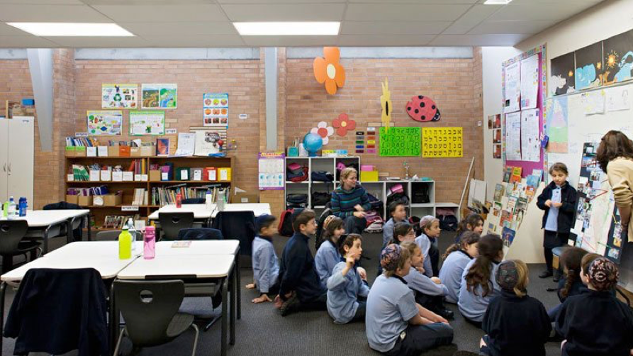
★第三天 - 莎士比亚公园自由活动+海滩BBQ；鸟岛观光（家长线路）
上午前往莎士比亚国家公园，公园位于一座狭窄半岛的尽头。站在峭壁顶端，
可以一览山川河流的无限风光，两侧则是美丽的海滩。我们将在美丽孔雀湾的海滩进行露天BBQ。孔雀岛真的生活着野生孔雀啊，希望那一天我们会有好运气！
下午驱车前往新西兰奥克兰的鸟岛，是新西兰最美的地方之一，曾被《国家地理杂志》评为世界30大美景之一。鸟岛附近的海岸线极美，每年会有几千只塘鹅在这里成双成对地筑巢栖息，繁殖下一代。鸟岛是奥克兰非常适合冲浪的海滩。
餐食：早餐-酒店；午餐-海滩BBQ；晚餐-当地特色餐饮
住宿：4星级酒店或温馨度假别墅
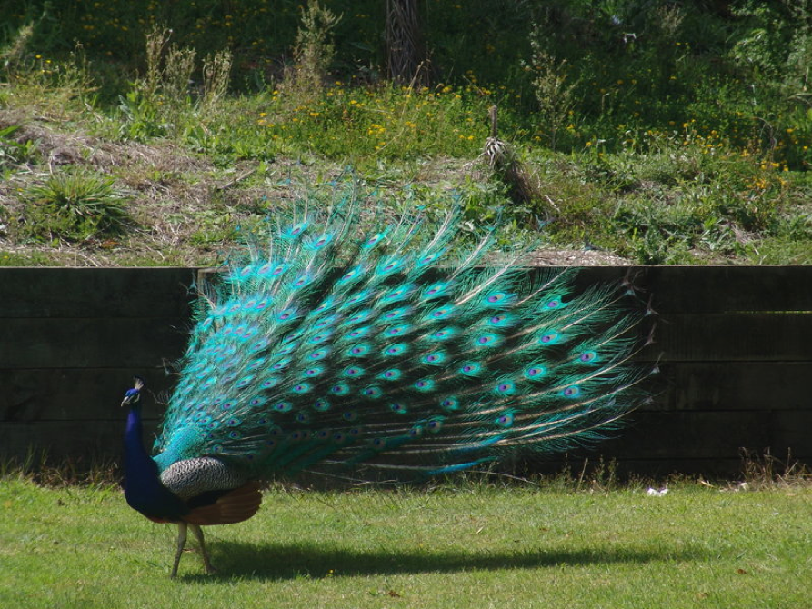
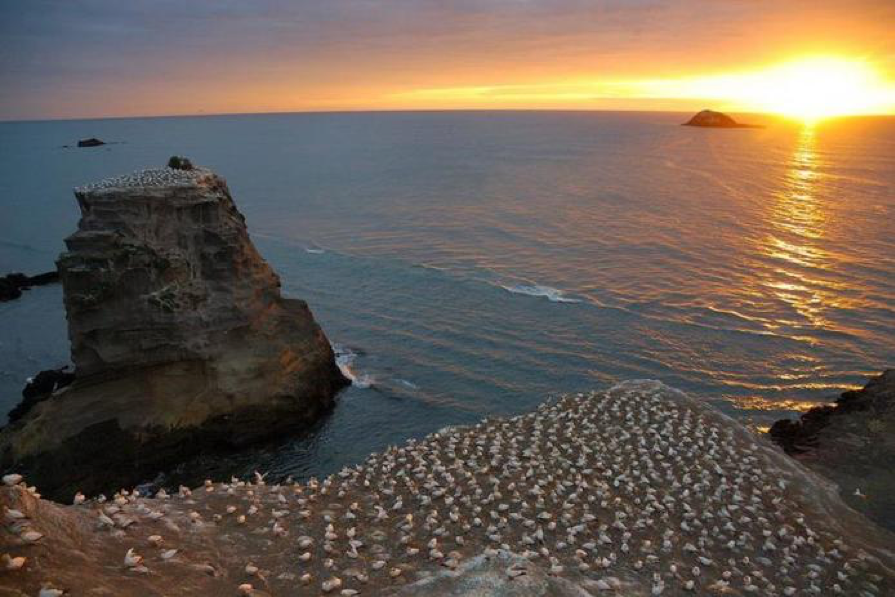
★第四天 - 奥克兰鸭子湖—一树山
上午游览位于奥克兰市区的鸭子湖，这里常年聚集大量的飞禽和水生鸟类，包括黑天鹅、天鹅、野鸭、海鸥、鸽子等漂亮的鸟类，是野生动物与人类和谐相处的一个典范之地，也是非常适合亲子活动的公园。
我们将登上奥克兰著名的一树山，在山顶可以俯瞰奥克兰全景，是最佳的拍摄点。
推荐餐食：午晚餐-当地特色美食
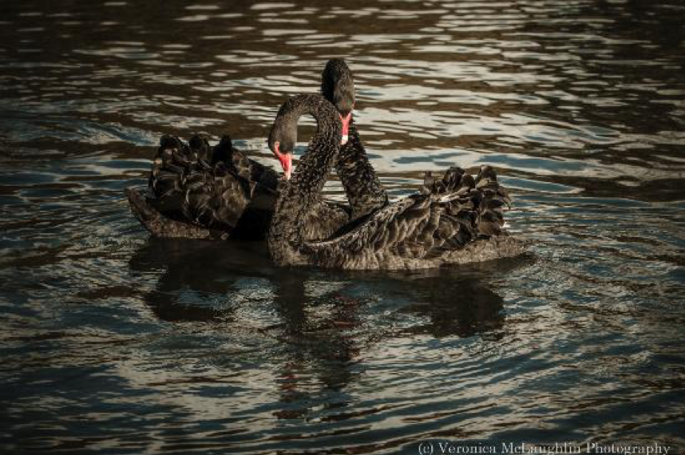
★第五天 -派西亚小镇游览
从奥克兰出发，驱车直达派西亚-一个具有浓厚热带风情的小镇，也是新西兰最北面。这个由144个岛屿组成的 地区叫Bay Of Island。也是距离90里海滩最近的小镇。派希亚以休闲旅游为主，人文景观不多，派希亚教堂值得一看。派希亚也正好在去怀唐伊（Waitangi）具有历史意义的条约屋（Treaty House）的路边，怀唐伊条约标志着新西兰作为一个国家的开始。派希亚的正西面是哈鲁鲁（Haruru），在那里你会发现一处令人印象深刻的瀑布和一条木板路。下午到达小镇后，您可以在海边漫步，隔海眺望新西兰最初的首都——拉塞尔。
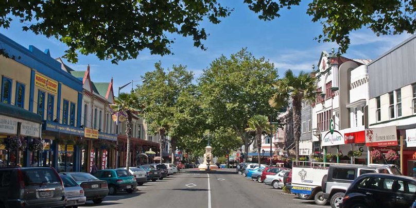
★第六天 - 派西亚-九十里海滩
九十里海滩是新西兰北岛最著名的经典旅游路线之一。90英里海滩( Ninety Mile Beach)位于雷因格海角，在新西兰的最北端，面向塔斯曼海，拥有平坦壮阔的黑沙滩，车辆可以直接在上面进行行驶，近距离的观看壮美的新西兰海岸线。在90英里海滩(Ninety Mile Beach)登上雷因格海角灯塔，欣赏辽阔的太平洋和塔斯曼海交汇的情景。站在灯塔上，还会看到著名的新西兰圣诞树林。如果在前往雷因格海角的途中不看看“90英里海滩”，那就算不上到过雷因格海角，还有很多人认为这里是全世界最好的海滩垂钓地点。
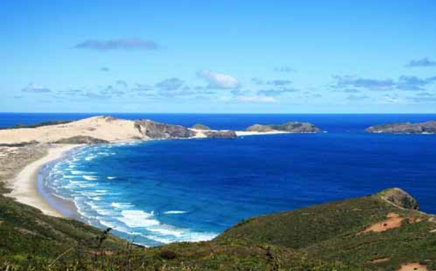
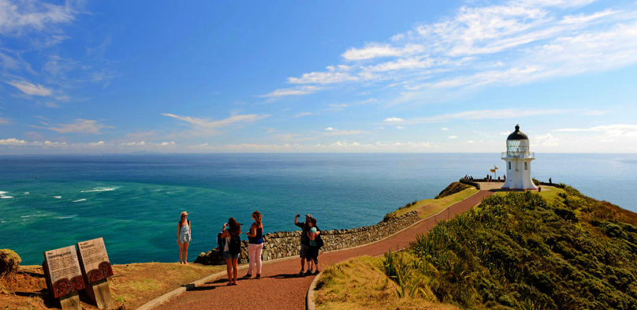
★第七天 - 新西兰岛屿湾石中洞+观海豚半日游
早餐后我们将带您乘坐豪华游轮出海，随游船穿行在144座岛屿间，聆听船长的介绍，体验岛屿湾原始的自然生态，邂逅自然环境中的各种野生动物。参观标志性的“岩中洞”景观，观赏当地海豚，中午登上乌如普卡普卡岛（Urupukapuka Island），游览世外桃源欧提希湾（Otehei Bay），并享受新鲜美味的午餐。我们超过 90 %的行程都看到了海豚，一定会让你留下终身难忘的海豚奇遇回忆。
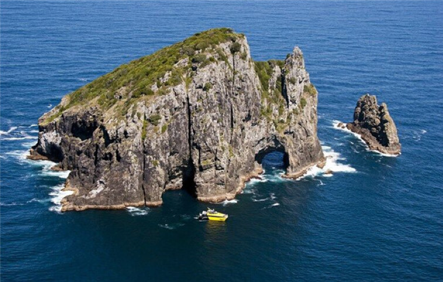
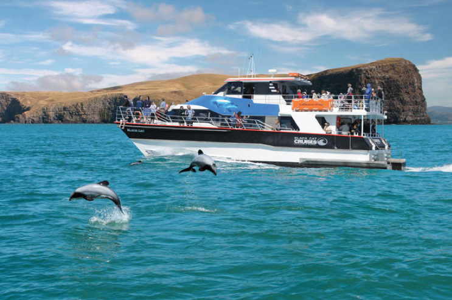
返回奥克兰
★第八天 - 汉密尔顿-霍比特村
从奥克兰出发，前往风景优美的汉密尔顿花园，
汉密尔顿花园（Hamilton Gardens）并未按照传统的植物园进行规划开发，而是以人与植物的关系为主题，共包含5个主题花园系列，总占地面积达58公顷。
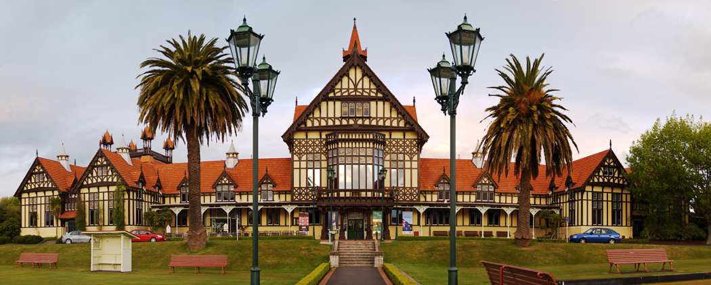
《指环王》中夏尔的取景地玛塔玛塔。1999年，为了拍摄指环王而建的霍比特小屋，已经成为了新西兰的地标，每年无数的游客来此一圆自己的魔戒梦。
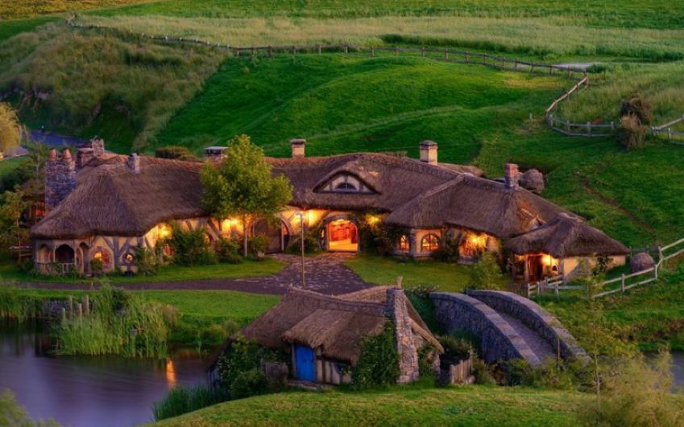
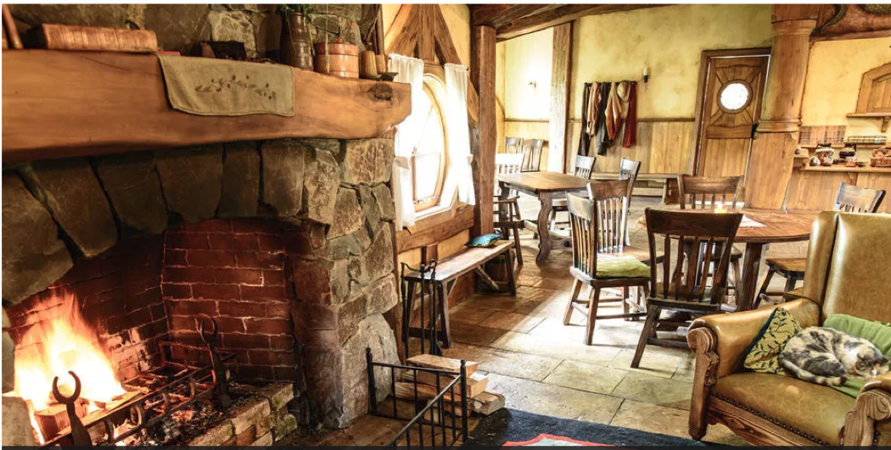
★第九天 - 爱歌顿牧场-萤火虫洞
之后前往罗托鲁瓦，游览风景秀丽的罗托鲁阿湖；接着前往爱歌顿牧场，乘观光车开始纯净新西兰农庄之旅，在这里可与各种可爱的动物零距离接触，亲手喂食各种动物，还可参观奇异果园。
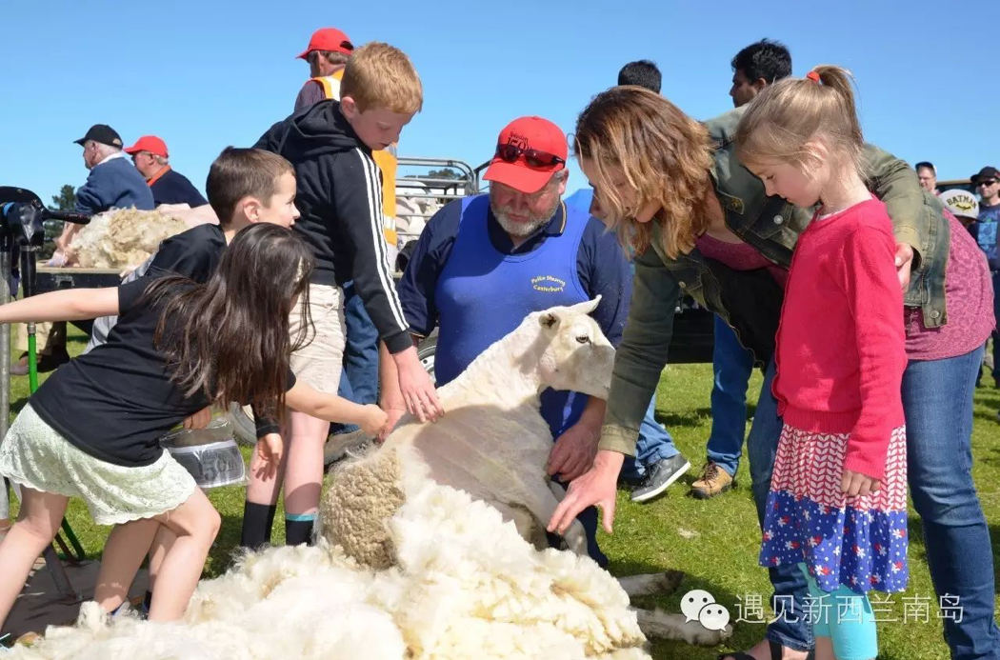
驱车去神奇的怀托摩萤火虫洞，3000万年前，整个怀托摩地区淹没在海平面之下，层叠的石灰岩便在海底远古岁月中慢慢生成。如今这片石灰岩地层成为新西兰最神奇的地下奇观。梦幻般的萤火虫洞穴，形态各异的溶洞，还有无数的地下河和流水洞组成的一个个地下迷宫。您将乘船静静地驶入地下暗河，欣赏成千上万只神奇的萤火虫组成的银行繁星。这条始于 19 世纪 80 年代晚期的经典游程将带你探索最返璞归真、最具标志性的新西兰景点。
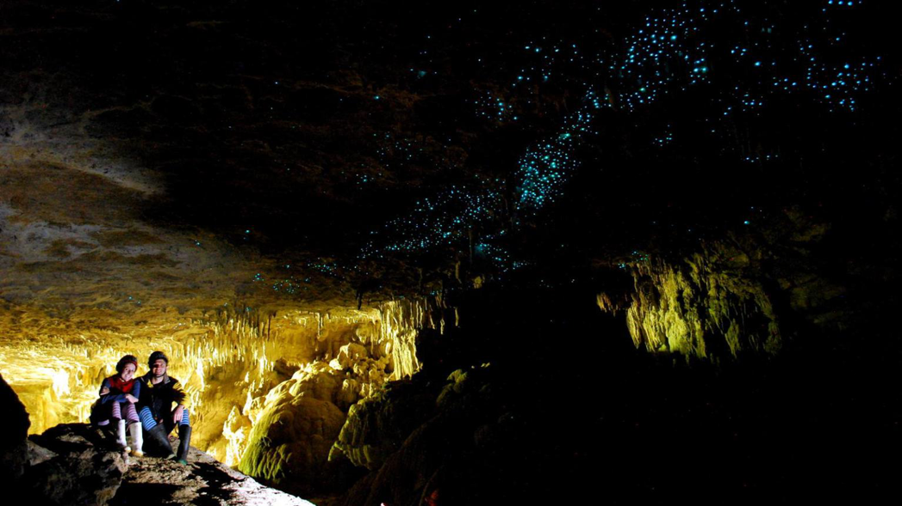
之后便返回奥克兰，参观夜晚的天空塔，在skytower用晚餐。
★第十天 -结束新西兰游学之旅，返回国内。
这天大半天将在奥克兰休闲度过，按照个人需求，我社可安排人员和车辆以供外出休闲或购置纪念品等服务。按航班时间，安排送机，准备启程回国，暂别新西兰的花海田园，抵达中国
注1：部分景点项目门票不包含在标准行程之内；
注2：根据签证、航班、酒店及不可抗拒因素，我社在不减少景点的情况下，保留对出团日期，出团线路 的变更权利
相关说明：
trip旅行社的李硕伟先生2018年获得新西兰旅游局颁发的旅游专家的资质
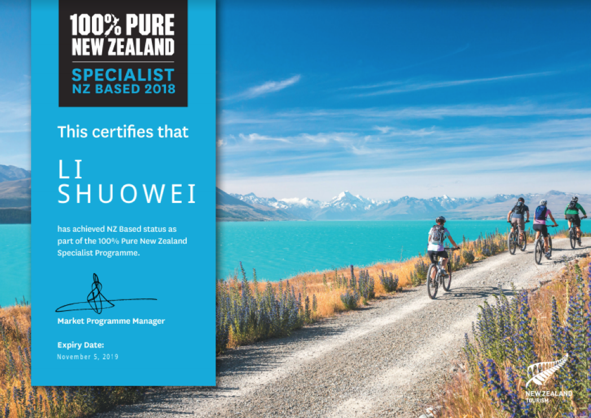